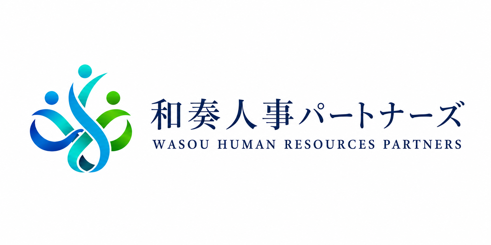
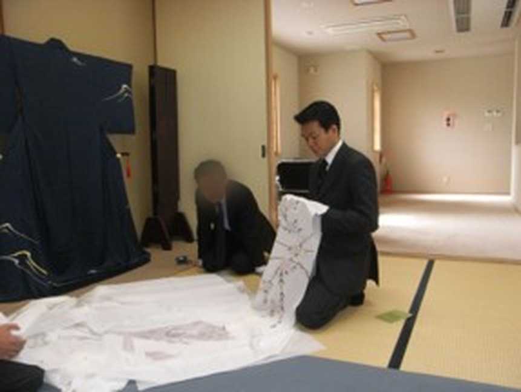
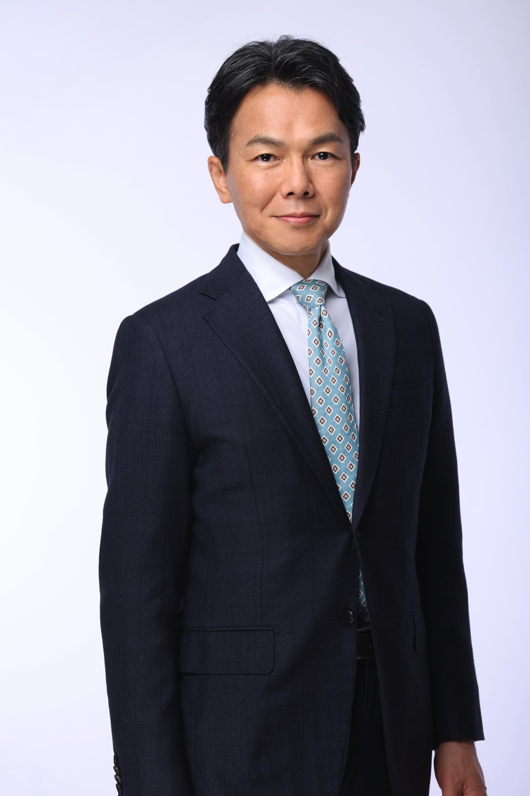

1ヶ月間で
19名応募／6名採用
着物専門店
1年間で約1,000万円かけても応募ゼロ。うち5名が現在でも活躍中。

開催日を確認して申し込む2代目・3代目経営者の方へ

廣瀬 祥久／和奏人事パートナーズ 代表
着物業界から転身した、採用・人事コンサルタント
参加費無料／各回5社までの少人数制／
所要2時間（本編60分・以降は任意）
求人媒体・採用ページからの応募が、そこまで増えた企業があります。
先日お渡ししたご案内の、セミナーお申し込みページです。
廣瀬 祥久／和奏人事パートナーズ 代表
着物業界から転身した、採用・人事コンサルタント

着物専門店の常務取締役だった当時。
私がいたのは、国内でも人が集まらない業界の代表格、着物業界です。転職を考えたとき、「着物店で働こう」と思う人は、ほとんどいません。着物の知識もない。だから「自分にできそうだ」とも思えない。
買い手市場と言われた時代でさえ、応募が来ませんでした。
私はその業界で、常務取締役として14年、求人と向き合ってきました。
誤解を恐れずに言えば——建設業も、運送業も、慢性的な人手不足と言われますが、「きつくても、やってみようか」と考える人は一定数います。市場が存在するのです。
着物業界には、それすらありませんでした。
選択肢に上がらない会社に、どうすれば人が来るのか。それを14年考え続けた結果が、いまお伝えしている方法です。
いま支援しているクライアントの1社は
歯科衛生士の採用です。
求人倍率 23.1倍
※全国歯科衛生士教育協議会／令和8年6月公表。養成校の就職者に対する求人人数倍率。
おそらく、いま日本で最も採用が難しい職種のひとつです。
人事コンサルタントからの提案を、これまで何度も受けてこられたと思います。
求人票の書き方、媒体の選び方、面接の手法——そのどれもが「伝える」段階の話です。
私たちがお伝えするのは、その手前の2段階です。
同族間・幹部間のズレをなくす
事業の未来から逆算して選ぶ
働きたい人の心を動かす原稿に
同族会社の場合、STEP 1を飛ばすと、STEP 3で何を書いても効きません。
社内で「どんな人が欲しいのか」が揃っていない状態で募集をかけているからです。
1ヶ月間で
19名応募／6名採用
着物専門店
1年間で約1,000万円かけても応募ゼロ。うち5名が現在でも活躍中。
2ヶ月間で
103名応募／9名採用
都内・不動産会社
大手媒体に3ヶ月90万円で応募30名。うち7名が現在でも活躍中。
2ヶ月間で
22名応募／3名採用
地方・食品加工会社
あらゆる媒体で2年間に応募4名。現在、3名とも活躍中。
「無料セミナー」と聞くと、売り込みを警戒される方が多いと思います。当然のことです。ですので、当日の時間の使い方を、申し込む前にすべて公開します。
セミナー本編
採用3ステップの具体的な内容
弊社サービスのご案内
ご支援内容と費用感をお伝えします
個別相談（ご希望の方のみ）
貴社の状況を伺い、その場でお答えします
個別相談は任意です。90分の時点でご退席いただいて構いません。
その場でお引き止めすることも、後日しつこくご連絡することもありません。
ご案内の30分を設けているのは、隠すよりお伝えしたほうが誠実だと考えているからです。内容にご興味がなければ、そこで判断していただければ結構です。
※求人原稿の無料診断をご希望の方は、当日お申し出ください（後日メールでお返しします）。
各回5社までの少人数制
一社一社と丁寧に向き合うため、人数を絞って開催しています。
まずは私たちの考え方と手法そのものを知っていただきたい——という思いから、無料でご提供しています。
自社の採用状況を9つの質問で診断できるシートを進呈します。セミナー後、自社で現状を確認していただけます。
いま出されている求人原稿を拝見し、改善点をお伝えします。後日メールでお返しします。
「震災で融資が途絶え、150名の仲間の職を守りきれなかった。」

廣瀬 祥久 和奏人事パートナーズ 代表
着物業界から異色の転身を遂げた、採用・人事コンサルタント
大卒後、叔父が経営する30数店舗の着物専門店に入社し、常務取締役として経営再建に奔走。買い手市場の時代でさえ求人難だった着物業界で、悪戦苦闘の末に独自の採用求人戦略を作り上げ、2017年「求人とは"働きたい人の集客"である」という発想に到達。「小手先の採用テクニックは必ず失敗する。採用求人は"事業成長からの逆算"で設計すべき」との信念の元、2代目・3代目が経営する求人難の企業に伴走しています。
独立から14年／これまでに支援した同族企業 34社／1社あたりの平均支援期間 3年3ヶ月